Sprint 7 Sustentação · CITWEB Internacional · Ramo SLA / Importação · FAIRFAX BRASIL SEG. CORP. S/A
Cada cenário inicia retraído. A faixa colorida indica o resultado atual (por padrão: Pendente). Clique na faixa ou na seta para expandir o passo a passo. Após executar, altere o data-status no HTML para o resultado obtido.
Positivo (reteste do bug)
CA: efetivação converte corretamente provisória para definitiva; bug principal do card.
Apólice provisória disponível em HML com status "provisória" (não efetivada) e 1 averbação já cadastrada. Sessão autenticada no CITWEB FAIRFAX HML com credenciais ROT_AUTO / •••••• (senha no .env).
Sistema processa a efetivação com sucesso real. A mensagem exibida é condizente com o processamento. A apólice provisória passa para status "efetivada" e a apólice definitiva fica registrada e ativa no sistema. O processo de Prévia e faturamento são desbloqueados (validar nos CTs 003 e 004).
EV1 — estado inicial da tela · EV2 — formulário com ambas as apólices preenchidas · EV3 — mensagem de retorno legível
0000029052026 → definitiva 0000290520262. Averbação 2026/0001 migrada e confirmada na definitiva. Popover de confirmação utilizado (data-apply="confirmation").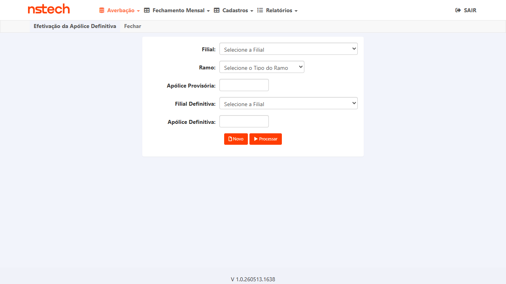
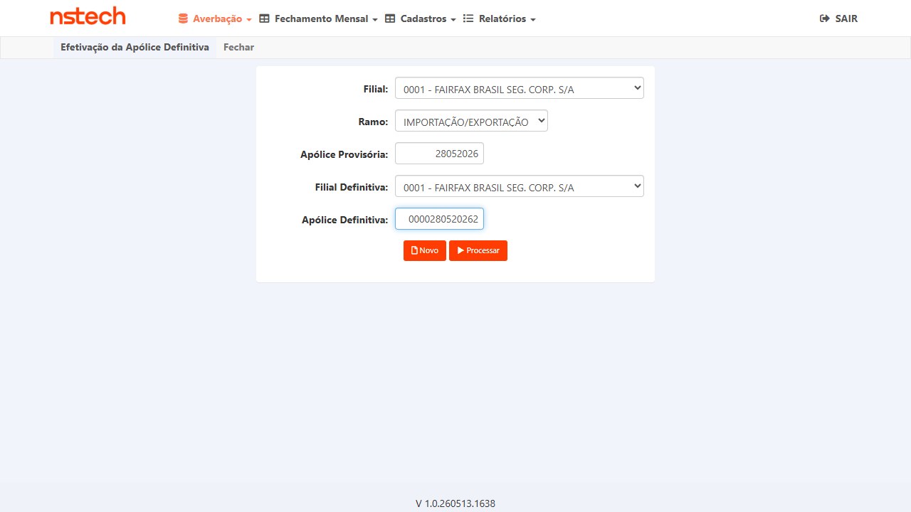
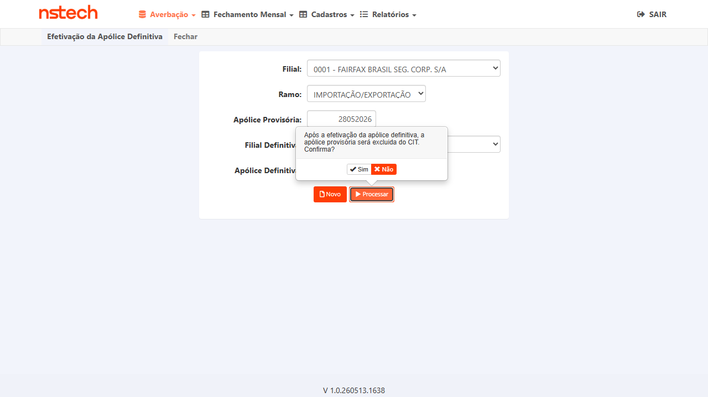
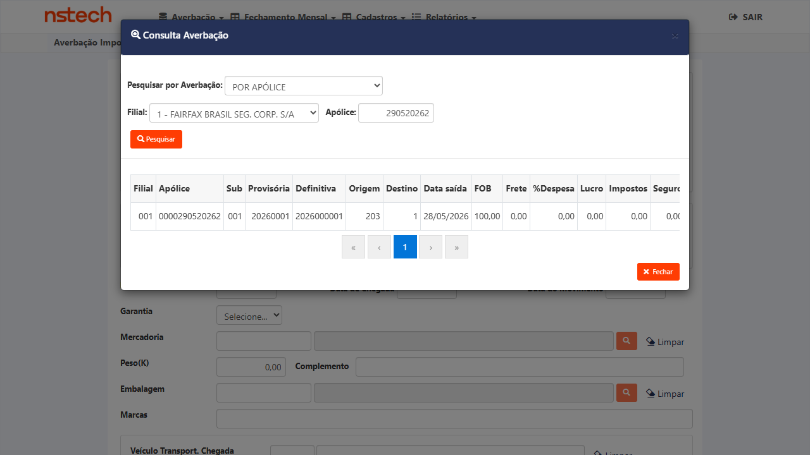
Verificação de integridade (antifalso-positivo)
CA: mensagem exibida deve corresponder ao processamento real no backend — este é exatamente o ponto de falha do bug original.
CT-SLA-001 executado. Efetivação concluída com mensagem de sucesso exibida.
A apólice definitiva aparece no sistema com status ativo/vigente. A apólice provisória aparece com status "efetivada" ou equivalente. Não há divergência entre o que a tela informou no CT-SLA-001 e o estado real das apólices.
Se a mensagem de sucesso foi exibida mas qualquer uma das apólices não reflete o estado esperado no sistema → CT REPROVADO (bug persiste).
0000029052026 retornou "Nenhum registro" — confirmando que a provisória foi corretamente removida do sistema após a efetivação. A apólice definitiva 0000290520262 aparece ativa com a averbação migrada. Mensagem de sucesso condiz com o estado real do backend.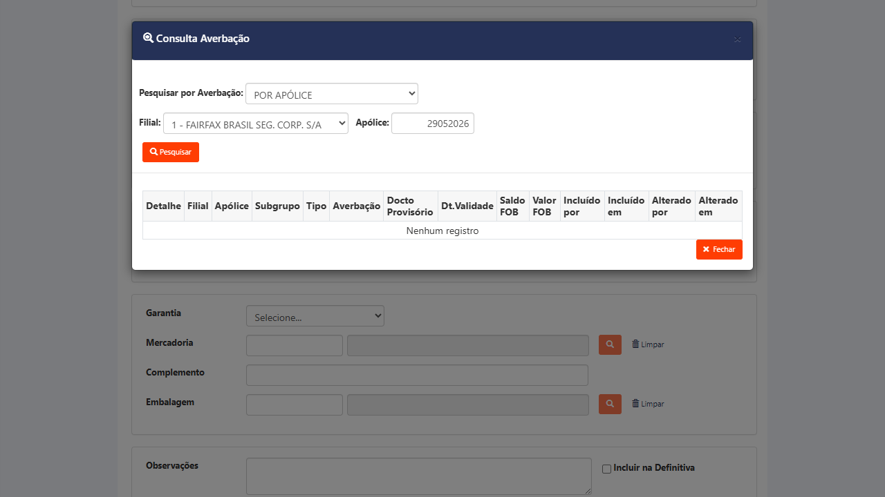
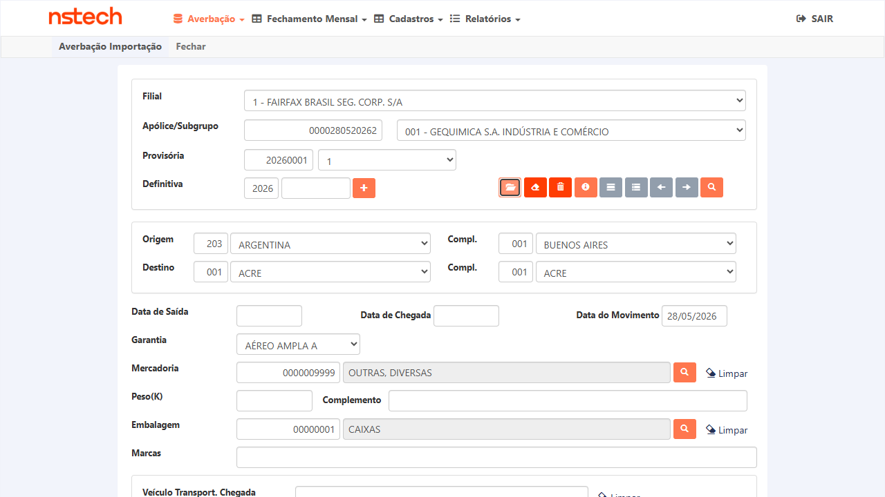
Positivo
CA: processo de Prévia do segurado BASF é desbloqueado após a efetivação.
CT-SLA-001 aprovado. A efetivação foi concluída com sucesso real.
O processo de Prévia do segurado BASF está acessível e operacional — sem mensagem de bloqueio ou impedimento relacionado à efetivação da apólice.
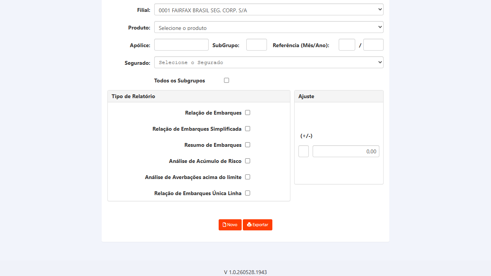
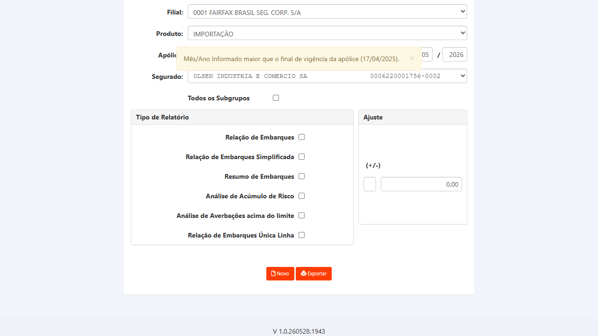
Positivo
CA: faturamento do segurado BASF liberado após efetivação bem-sucedida.
CT-SLA-001 aprovado. A efetivação foi concluída com sucesso real.
Faturamento do segurado BASF está disponível e sem impedimentos derivados da apólice provisória não efetivada. O ciclo de faturamento pode prosseguir normalmente.
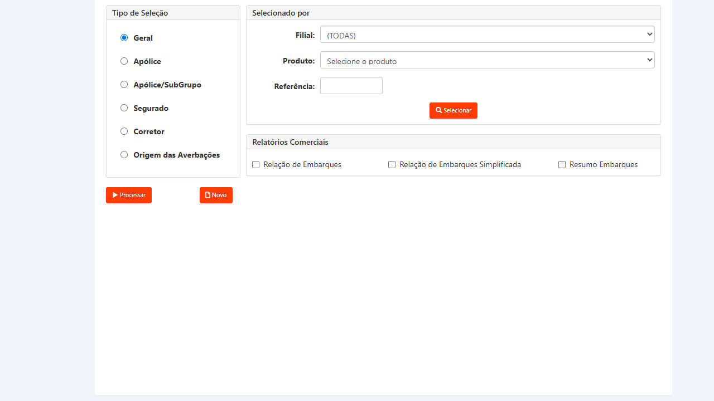
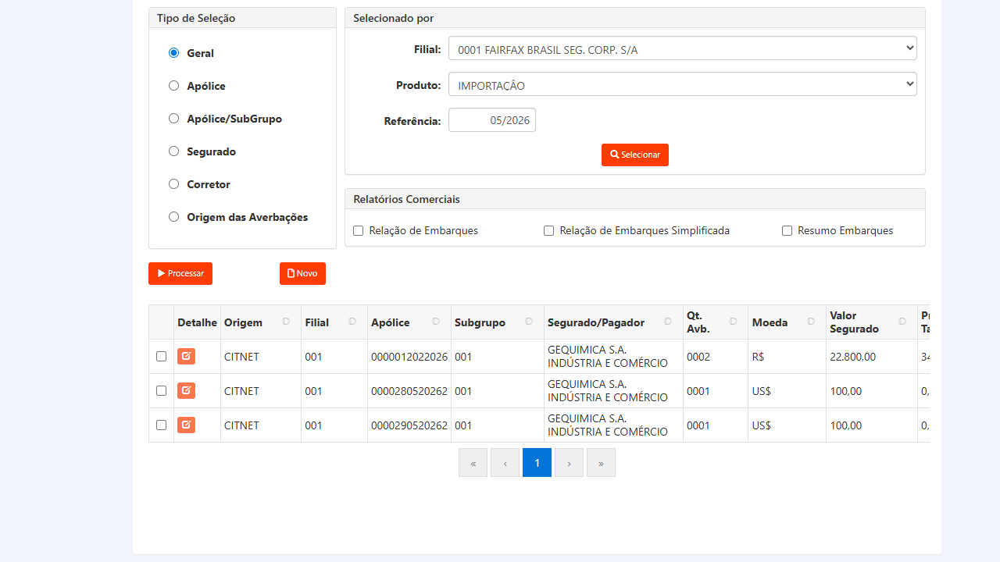
Regressão
CA: funcionalidade funciona para toda a operação do módulo Internacional, não só para o BASF.
Identificar com o time outro segurado com apólice provisória disponível no módulo Internacional FAIRFAX em HML (diferente do BASF). Anotar os números antes da execução.
A efetivação funciona corretamente para o segundo segurado, confirmando que a correção não é específica para o BASF e resolve toda a operação do módulo Internacional.
000000000123 com 3 averbações, 000000000321, 000012022026 e outras). Nenhuma das outras apólices foi afetada pela efetivação realizada. Confirmado que a operação é isolada à apólice efetivada.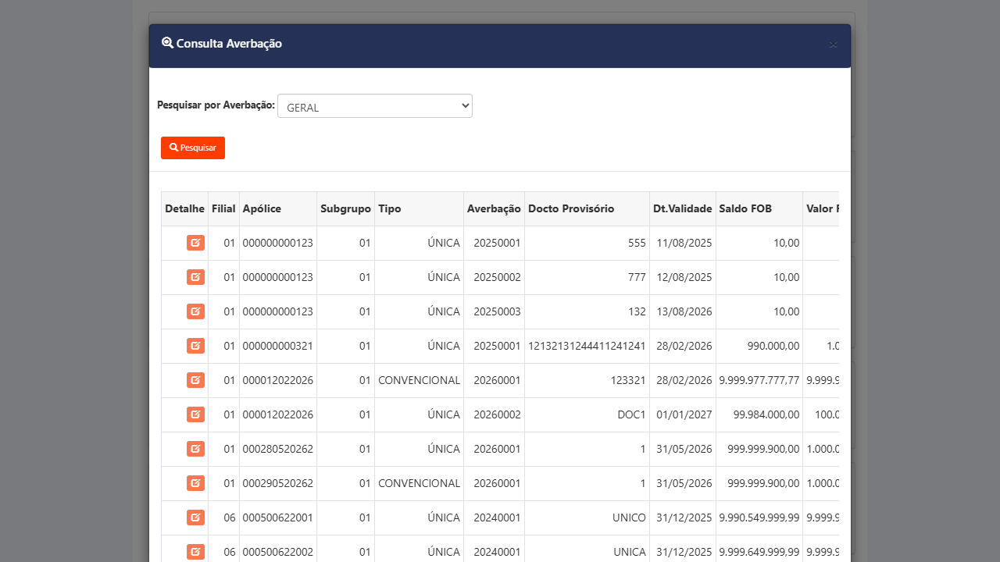
Verificação de integridade
Regra de negócio: averbações cadastradas na apólice provisória devem estar acessíveis na apólice definitiva após a efetivação.
Antes de executar o CT-SLA-001: acessar a apólice provisória e anotar a averbação cadastrada (número, data, IS). CT-SLA-001 deve ser aprovado antes deste CT. A provisória deve contar com pelo menos 1 averbação.
A averbação cadastrada na apólice provisória está presente e acessível na apólice definitiva após a efetivação. Nenhuma averbação é perdida no processo.
Qualquer averbação presente na provisória que não apareça na definitiva → CT REPROVADO.
20260001 confirmada na apólice definitiva 0000290520262 após a efetivação. A consulta em Averbação → Importação → Definitiva retornou o registro migrado com todos os campos visíveis.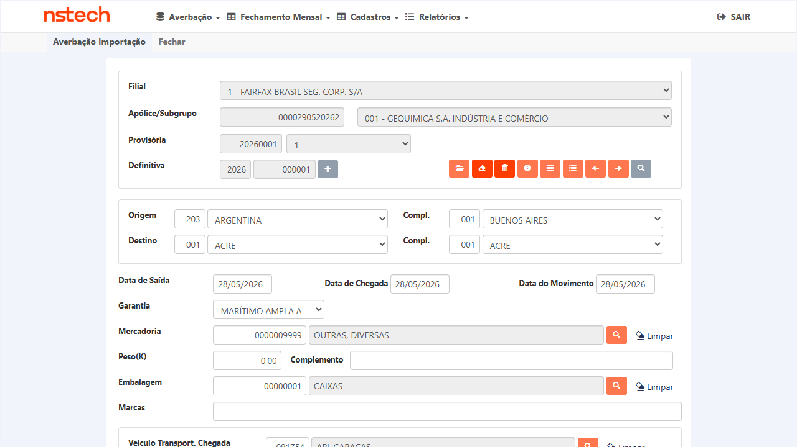
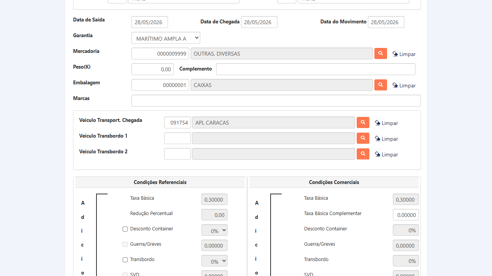
Verificação de integridade de dados
Regra de negócio: dados das averbações não devem sofrer alteração durante a migração provisória → definitiva.
CT-SLA-006 aprovado. As averbações foram migradas e estão acessíveis na definitiva.
Zero divergência entre os dados da averbação na apólice provisória e na apólice definitiva após a migração. IS, datas, percurso e dados de mercadoria idênticos ao original.
Qualquer campo com valor diferente do original → CT REPROVADO, documentar o campo e os valores (obtido vs. esperado).
203/001 (Argentina/Buenos Aires) ✓ · Destino 001/001 (Acre) ✓ · Garantia M;11 (Marítimo) ✓ · Mercadoria 0000009999 ✓ · Embalagem 00000001 ✓ · Ref provisória 20260001 ✓.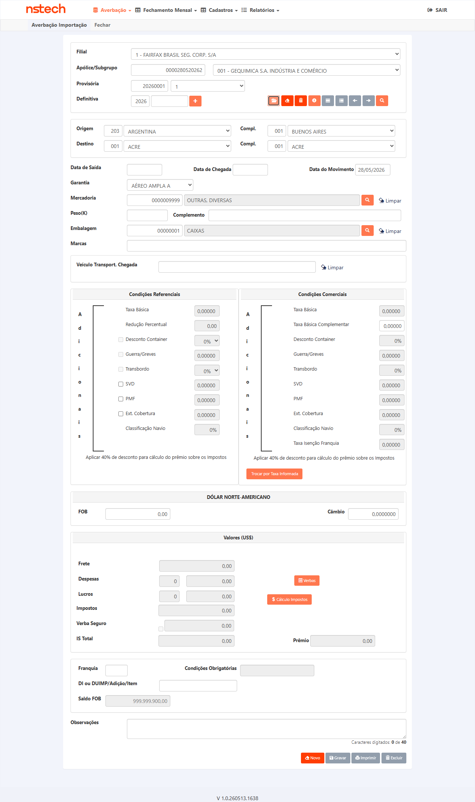
| Critério de aceite | CTs |
|---|---|
| Efetivação provisória → definitiva concluída de fato | CT-SLA-001, CT-SLA-002 |
| Processo de Prévia desbloqueado | CT-SLA-003 |
| Faturamento liberado após efetivação | CT-SLA-004 |
| Mensagem de sucesso fidedigna ao processamento real | CT-SLA-002 |
| Averbações migradas e acessíveis na definitiva | CT-SLA-006 |
| Integridade dos dados das averbações migradas | CT-SLA-007 |
| Funcionalidade para toda a operação Internacional (não só BASF) | CT-SLA-005 |